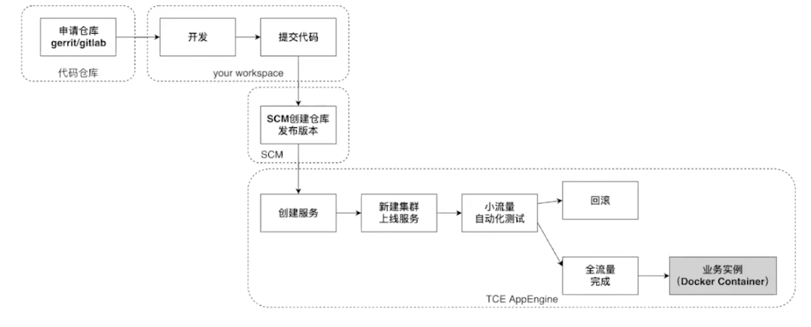

自动化流水线如何构建项目并运行？
DevOps（Development和Operations的组合词）是一种重视“软件开发人员（Dev）”和“IT运维技术人员（Ops）”之间沟通合作的文化、运动或惯例。透过自动化“软件交付”和“架构变更”的流程，来使得构建、测试、发布软件能够更加地快捷、频繁和可靠。
SourceControlManagement 代码发布管理平台
拉取源代码，运行指定的build脚本(如 sh build.sh），将打包后的output目录下的内容打包成tar包并上传，生成可以在线上运行的代码或资源。
CloudEngine云引擎
容器发布和管理平台，基于k8s。 到scm仓库拉取tar的压缩包，根据配置生成用于构建的dockerFile，构建docker镜像,挂在宿主机上，启动服务，为服务创建唯一标识（psm)进行后续的管理。部署时通过k8s调度到某个node的pod，下载服务镜像。
TCE将一些物理服务器资源合并成一个集群，再将集群拆分为更细粒度的计算资源，从而实现对计算资源更灵活的调度和分配。
集群中多实例部署，每个实例只需要负责一部分的请求流量。多实例也可以实现容灾和滚动升级。
可以通过实例 ip+port的方法访问所部署的服务，也可以使用psm，即每个实例启动，会向注册中心报告自己的psm和ip，这样下游服务就可以访问注册中心来获得对应psm的实例列表。

ApiManament
管理服务接口,集成了测试、抓包、mock测试等功能。
ApiGeteWay
以API为核心，提供流量调度、限流、降级、服务治理等全套解决方案能力的网关平台。 AGW将http协议转换为thrift协议，把http请求转换为kitex请求。所以也需要在idl文件中根据idl语法进行标注。
分布式AGW
网关以独立的进程部署在业务实例中，流量->TLB->业务集群，通过网关转发到业务实例。流量路径中少一跳，整体时延收益明显。同时，分布式网关以sidecar模式独立进程部署在业务实例中，业务PSM天然隔离，隔离性和稳定性更好。 分布式AGW不支持跨机房流量调度、分流能力，比较依赖tlb的分流能力；不支持请求合并。
中心化AGW
流量路径从TLB–>网关集群–>业务集群。优势在于AGW集群作为集中到网关节点，拥有灵活的流量调度能力，如集群分流、机房调度等。
网关逻辑的更改发布一旦有问题，会影响所有业务。
从网关能力演进的角度来看，分布式网关是未来的趋势。API Gateway Mesh逐渐成为主流。
LoadBalance
管理服务域名流量入口的七层负载均衡服务。
用户可以在TLB平台为自己的服务配置对外的域名从而完成流量接入。支持对域名进行匹配，如正则匹配、自定义匹配等，将访问域名的流量通过不同路由分发到对应的后端psm服务。
参考
相爱相杀：Servicemesh和API Gateway关系深度探讨：https://skyao.io/post/202004-servicemesh-and-api-gateway/
蚂蚁金服 API Gateway Mesh 思考与实践：https://www.infoq.cn/article/azCFGyTDGakZqaLEEDMN